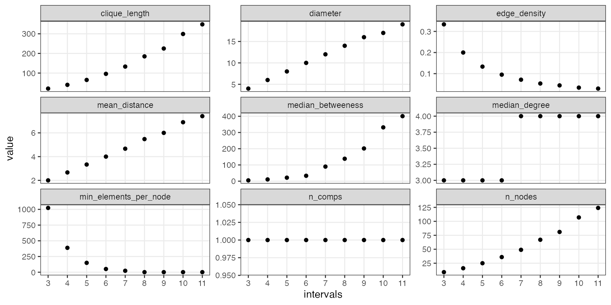
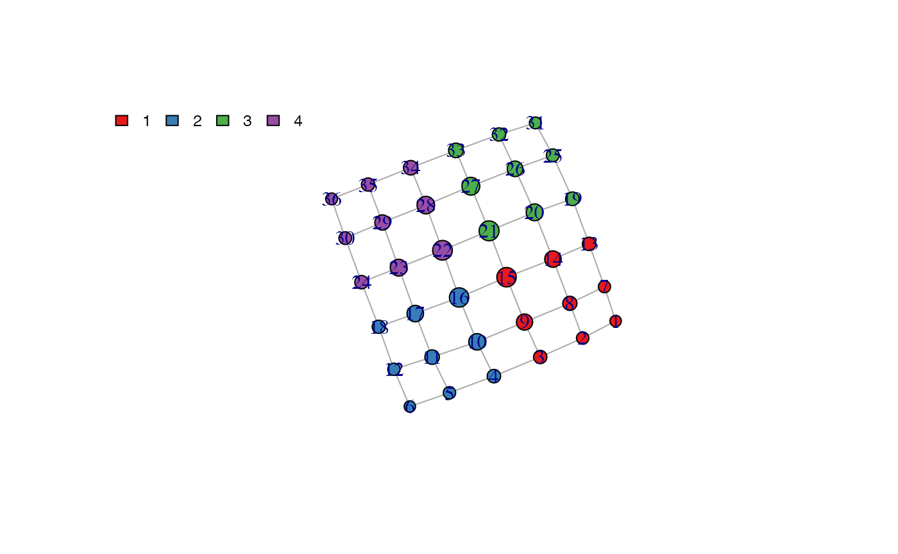
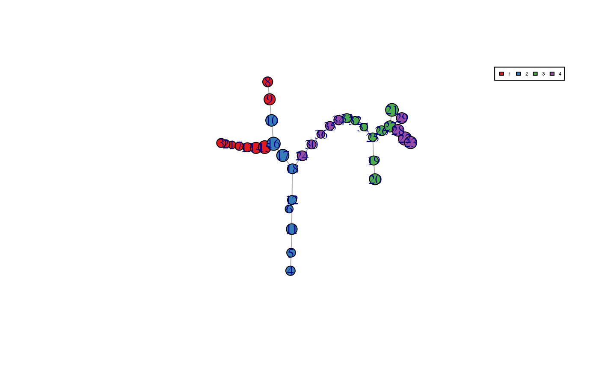
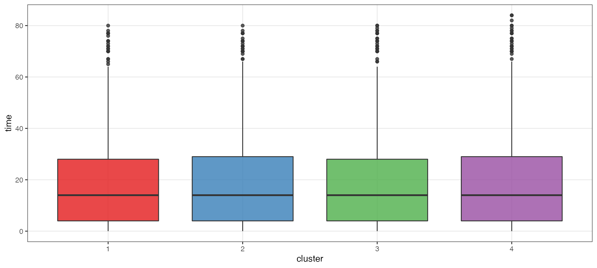
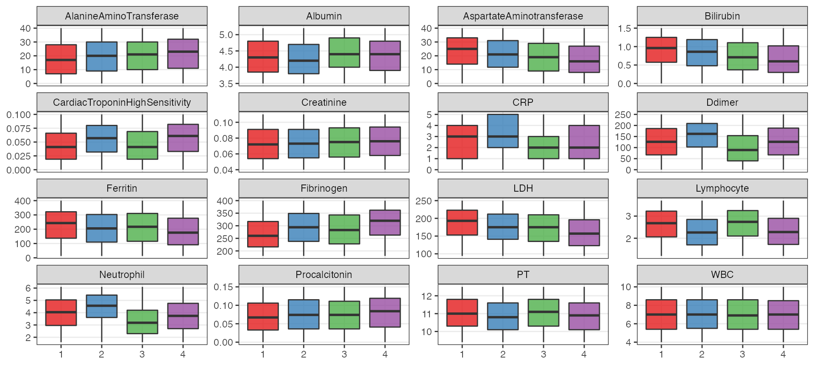
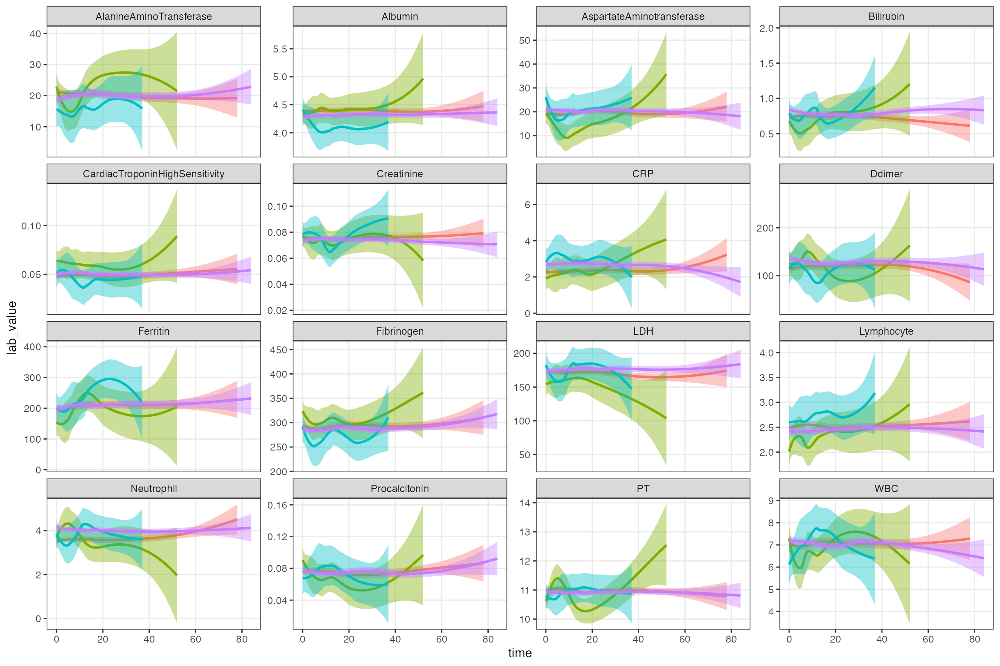

train.RmdIf your site is one of the “train” sites, please use this workflow to establish the topology and trajectories using the observations at your site.
Parameters:
my_file <- 'train-data.csv' # TDAMapper parameters (see grid search below) n_intervals <- 6 p_overlaps <- 60 n_clusts <- 8
Color palette for enrichment: blue > green > yellow > orange > red
# RColorBrewer::brewer.pal(length(unique(CommunityCluster$membership)), "Set1") my_colors <- c("#00A3DD", "#60C659", "#FFBC21", "#FF7F1E", "#EF2B2D")
Create a timeline for each subject (being time zero the first observation). Extract lab values to be used for TDA distance matrix.
Check format: - first col: row id “id” (can be any value, i.e. unique row number) - second col: pts id “covid_id” - third col: date “day”
Need to check whether rowid is important
FupData <- read.csv(my_file, header = TRUE, colClasses = "character") non_lab_value_names <- c('id', 'covid_id', 'day') lab_value_names <- setdiff(names(FupData), non_lab_value_names) processed_data <- FupData %>% mutate(day = as.Date(day, format = '%Y-%m-%d')) %>% group_by(covid_id) %>% mutate(first_date = min(day)) %>% ungroup() %>% mutate(id = as.integer(id), time = as.numeric(day - first_date, units = 'days')) %>% arrange(covid_id, time) %>% mutate_at(dplyr::all_of(lab_value_names), as.numeric)
The code in this section is optional.
intervals_seq <- seq(3, 11, 1) overlaps <- 60 clusts <- 8 graph_grid <- list() for (ii in seq_along(intervals_seq)){ print(ii) intervals <- intervals_seq[ii] f_sim_map <- map_tda(lab_values_mat, num_intervals = c(intervals, intervals), percent_overlap = overlaps, num_bins_when_clustering = clusts) f_graph <- igraph::graph.adjacency(f_sim_map$adjacency, mode = "undirected") graph_grid[[ii]] <- c(intervals = intervals, overlaps = overlaps, clust_bins = clusts, get_graph_properties(f_graph, f_sim_map)) }
## [1] 1
## [1] 2
## [1] 3
## [1] 4
## [1] 5
## [1] 6
## [1] 7
## [1] "Level set has only one point"
## [1] 8
## [1] "Level set is empty"
## [1] "Level set is empty"
## [1] 9
## [1] "Level set is empty"
## [1] "Level set is empty"
## [1] "Level set has only one point"
## [1] "Level set has only one point"graph_grid <- do.call("rbind", graph_grid) %>% as.data.frame() graph_grid %>% select(- overlaps, - clust_bins) %>% pivot_longer(-intervals) %>% ggplot(aes(x = intervals, y = value)) + geom_point() + scale_x_continuous(breaks = intervals_seq) + facet_wrap(~ name, scales = 'free_y')

We chose the hyperparameters to be 6 to be the number of intervals for TDAMapper.
graph_grid %>% # as.data.frame() %>% filter(intervals == 6)
## intervals overlaps clust_bins n_comps n_nodes median_degree median_betweeness
## 1 6 60 8 1 36 3 33.26944
## min_elements_per_node edge_density clique_length diameter mean_distance
## 1 51 0.0952381 96 10 4f_sim_map <- map_tda(lab_values_mat, num_intervals = c(n_intervals, n_intervals), percent_overlap = p_overlaps, num_bins_when_clustering = n_clusts) f_graph <- make_tda_graph( f_sim_map, data = processed_data, enrich_var = 'time', # enrich topology by time for now color_method = 'clust_color', my_colors = my_colors )

and compute trajectories and assign observations to nodes in network ### THIS STEP NEED MANUAL REVIEW Check the MST plot and TIME boxplots
out_trajectories <- find_trajectories(processed_data, f_sim_map, f_graph)

out_list <- compute_similarity(processed_data, f_graph$node_color, out_trajectories, f_sim_map)
## trajElmnts clusterTraj
## 1 3 2 1 7 13 14 15 16 17 18 1>2
## 2 4 5 11 12 18 2
## 3 6 12 18 2
## 4 8 9 10 16 17 18 1>2
## 5 20 19 25 31 32 33 34 35 36 30 24 18 3>4>2
## 6 21 27 26 25 31 32 33 34 35 36 30 24 18 3>4>2
## 7 23 22 28 27 26 25 31 32 33 34 35 36 30 24 18 4>3>4>2
## 8 29 28 27 26 25 31 32 33 34 35 36 30 24 18 4>3>4>2similarity_df <- out_list[[1]] id_node_cluster <- out_list[[2]] most_similar_traj <- similarity_df %>% group_by(covid_id) %>% slice(which.max(SJ)) # use Jaccard similarity head(most_similar_traj, 10)
## # A tibble: 10 x 11
## # Groups: covid_id [10]
## covid_id trajPaz trajPazclusters trajNumb trajElmnts trajLenght SJ SI
## <chr> <chr> <chr> <int> <chr> <int> <dbl> <dbl>
## 1 1 26 27 … 3 4 8 29 28 27 … 14 0.429 1
## 2 10 20 21 … 3 4 1 2 7 23 22 28 … 15 0.381 0.242
## 3 100 23 24 … 4 1 3 8 29 28 27 … 14 0.524 0.611
## 4 101 13 14 … 1 3 2 4 7 23 22 28 … 15 0.424 0.117
## 5 102 9 10 1… 1 2 3 4 8 29 28 27 … 14 0.276 0.229
## 6 103 20 21 … 3 4 1 2 7 23 22 28 … 15 0.519 0.275
## 7 104 3 4 5 … 1 2 3 4 8 29 28 27 … 14 0.261 0.333
## 8 105 4 5 6 … 2 3 1 4 7 23 22 28 … 15 0.333 0.297
## 9 106 14 15 … 1 2 3 4 1 3 2 1 7 1… 10 0.28 0.163
## 10 107 27 28 … 3 4 8 29 28 27 … 14 0.429 0.5
## # … with 3 more variables: SL <dbl>, JW <dbl>, clusterTraj <chr>centroids <- processed_data[, c('id', 'time', lab_value_names)] %>% left_join(id_node_cluster[, c('id', 'node')], by = 'id') %>% group_by(node) %>% summarise(across(.fns = mean), .groups = 'drop') %>% select(-id) node_color <- f_graph$node_color # save(centroids, node_color, out_trajectories, file = '../data/centroids.rda')
plot_dat <- processed_data %>% left_join(id_node_cluster %>% distinct(covid_id, id, cluster), by = c('id', 'covid_id')) plot_dat %>% ggplot(aes(x = cluster, y = time, fill = cluster)) + geom_boxplot(alpha = 0.8) + scale_fill_manual(values = f_graph$pal$color) + scale_color_manual(values = f_graph$pal$color) + theme(legend.position = "none", plot.title = element_text(size = 8, hjust = 0.5))

plot_dat %>% select(cluster, all_of(lab_value_names)) %>% pivot_longer(- cluster, names_to = 'Lab', values_to = 'lab_value') %>% ggplot(aes(x = cluster, y = lab_value, fill = cluster)) + geom_boxplot(alpha = 0.8) + labs(x = NULL, y = NULL) + scale_fill_manual(values = f_graph$pal$color) + scale_color_manual(values = f_graph$pal$color) + theme(legend.position = "none") + facet_wrap(~ Lab, scales = 'free_y')

processed_data_traj <- processed_data %>% left_join(most_similar_traj, by = c("covid_id")) %>% mutate(clusterTraj = as.factor(clusterTraj), time) %>% select(time, clusterTraj, all_of(lab_value_names)) %>% distinct()
processed_data_traj %>% pivot_longer(- c(time, clusterTraj), names_to = 'Lab', values_to = 'lab_value') %>% ggplot(aes(time, lab_value, colour = clusterTraj, group = clusterTraj, fill = clusterTraj)) + geom_smooth(method = "loess") + theme(legend.position = "none") + facet_wrap(~ Lab, scales = 'free_y')
## `geom_smooth()` using formula 'y ~ x'